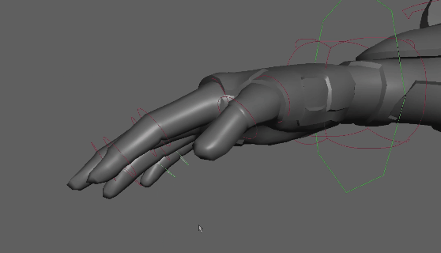

您可以设置自定义控制器层次，以便在复杂的装备结构中拾取漫游。

若要使节点可拾取，必须将其设置为控制器：
- 在拾取漫游层次中，选择要定义为父对象的对象。
- 在“控制”(Control)菜单中，选择“父控制器”(Parent Controller)。还可以在命令行中输入 controller -p 命令，以便在依存关系图中创建新的控制器对象。有关此命令以及其他控制器命令的信息，请参见技术文档。
- 使用上下左右箭头键可以在层次中移动。在控制器标记属性中设置“循环行走同级项”(Cycle Walk Sibling)以设置拾取漫游选择循环。